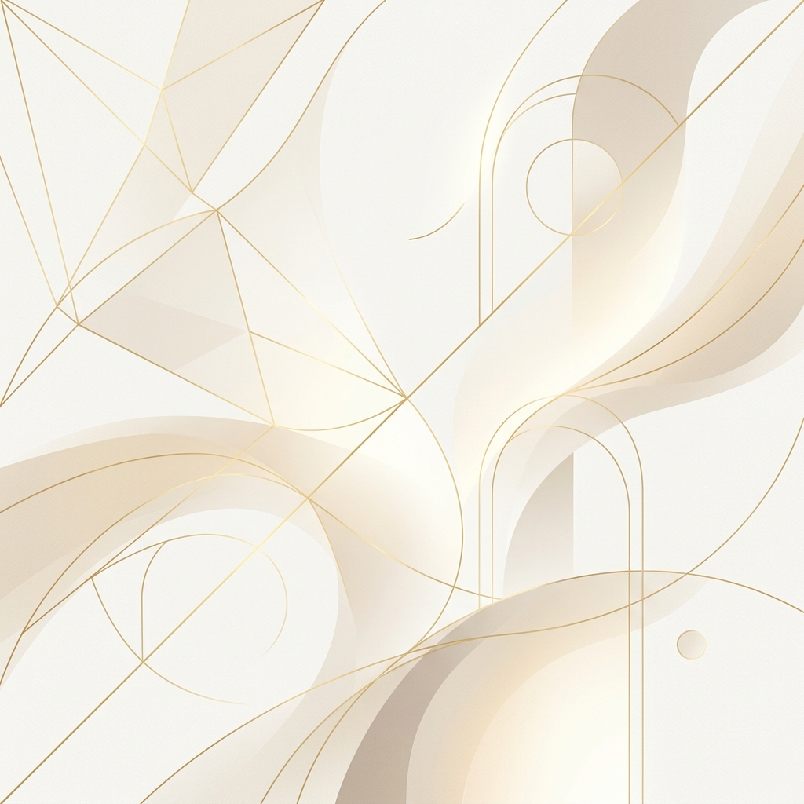

Стратегические коммуникации и PR
Елизавета
Махонина
Руководитель PR-отдела · Глава пресс-службы
Управляю информационным полем, строю медиасети, превращаю PR в рабочий инструмент влияния. Проекты любого уровня сложности. Москва.
5+лет в PR
12+человек в команде
10 млн+медиаохват